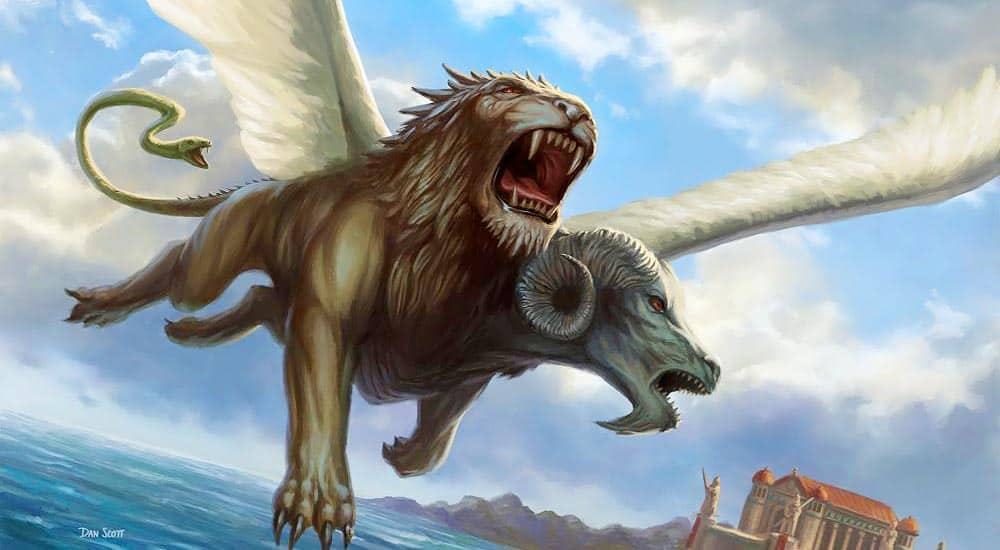

Quimera

Oriunda da Anatólia e cujo tipo surgiu na Grécia durante o século VII a.C., sempre exerceu atração sobre o imaginário popular. De acordo com a versão mais difundida da lenda, a quimera era um monstruoso produto da união entre Equidna — metade mulher, metade serpente — e o gigantesco Tifão.